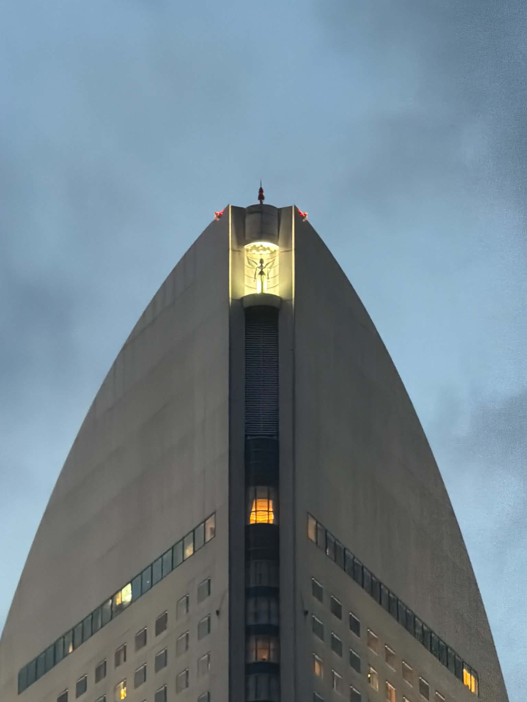

みなとみらいの印象
みなとみらいは、横浜の中でも特に現代的な雰囲気を感じた場所です。 大きな観覧車、高い建物、広い空があり、歩いているだけでも楽しい場所でした。 昼は明るく開放的で、夜になるとライトアップされた景色がとてもきれいでした。
印象に残ったポイント
01 Day View
昼のみなとみらいは、空が広く見えて明るい雰囲気でした。 観覧車の大きさもよく分かり、横浜らしい景色だと思いました。
02 Architecture
特徴的な形の建物が多く、写真を撮る角度によって違った印象になりました。 近代的でかっこいい街並みが印象的でした。
03 Night View
夜になると、観覧車やビルのライトがとてもきれいでした。 水面に光が映る景色は、今回の旅行の中でも特に好きな場面です。
Photo Details
ここでは、みなとみらいで撮影した写真を3つに分けて紹介します。 昼の観覧車、近代的な建物、夜景という流れで見ると、 みなとみらいの雰囲気の変化が分かりやすいと思います。

Cosmo Clock 21
大きな観覧車は、みなとみらいを代表する景色の一つだと思いました。 昼に見ると、空の青さと観覧車の形がよく見えて、とても印象に残りました。

Modern Buildings
特徴的な形の建物や高いビルがあり、横浜の近代的な一面を見ることができました。 下から見上げると、とても迫力があり、都会的でかっこいい雰囲気を感じました。

Night View
夜になると、みなとみらいの雰囲気はさらにきれいになりました。 観覧車やビルのライトが水面に映り、横浜旅行の中でも特に好きな景色でした。